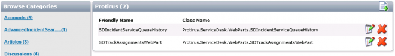

In this Article I'm going to explain how to deploy a WebPart to your Process Manager.
Articles
- List
- Setup
- Simple
- Deploy (this)
- Inspecting other WebParts
- Controls
- Styling a WebPart
- WF/PM Connection String
- Connecting to SQL to retrieve data
Login to your Process Manager as a Administrator.
Admin | Portal | Plugin Upload
Select 'WebPart' for 'Plugin Type'.
Choose your DLL that you've compiled from the VS Project and click upload.
This may take a few seconds/minutes, wait until the page has completed loading.
To confirm it has successfully been deployed you can check it has been added to the following folder:
[Install Drive]:\Program Files\Symantec\Workflow\ProcessManager\bin
Once the web part has been uploaded it needs to be added to the Web Parts Catalog. You may need to restart IIS for it to appear in the list.
Go to "Admin | Portal |Web Parts Catalog"
It is probably best to have custom WebParts in their own category. If there is already a category, select it and then press the Edit icon on the right hand side of the category name title bar as shown in the image below.

If there is no category then select the same icon for any category and when the Add WebPart dialog pops up type in 'CategoryName' for the Category field. This will create a new category when you save.
Select the custom web part, from the Class Name dropdown list.
This will auto populate a Friendly Name but this can be changed.
| Note. This only has to be done once. If you make changes to the webpart you can simply copy over the dll that is in the <workflow dir>\ProcessManager\bin folder. However, after you’ve copied the new dll and refresh the page it can take a while to reload so you may need to close and reopen ProcessManager/ServiceDesk. |
|---|
The next step is to add the web part onto the required page.
Go to "Admin | Portal | Manage Pages" and go to the required page. You may wish to create a clone of a current page and make updates to that first.
When the page loads click on "Site Actions | Modify Page".
Then press "Site Actions | Add Web Part".
Select the previously made category and the required web part as shown in the image below.
Select the required zone and then press "Add". The WebPart will be added to the page and look like the image below.
You can then edit the 'Title' and other default WebPart properties, like any other web part.
The new 'ContentText' variable, within the Property Grid section, we added can display any text we wish, I've just added "hello" as an example above.
Now we can try it in a Process View Page.